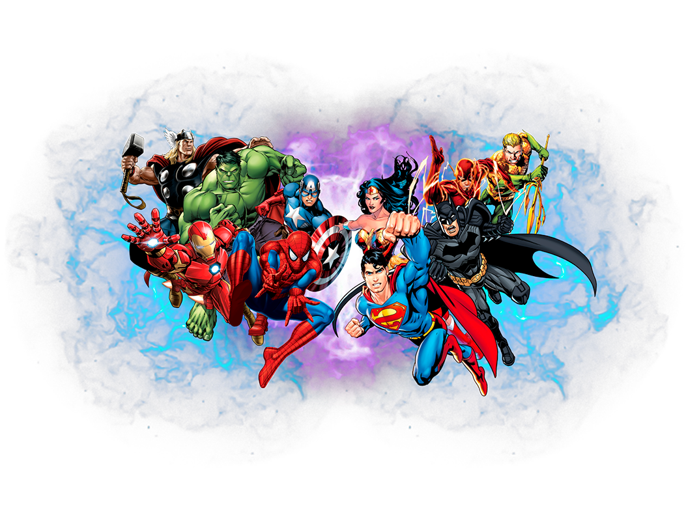

Marvel vs DC Comic: ¿Quién gana la batalla de los superhéroes?
Marvel y DC Comic son las dos editoriales de cómics más importantes del mundo. Ambas tienen un universo de superhéroes y villanos que ha cautivado a millones de fanáticos durante décadas. A la hora de comparar Marvel vs DC Comics, hay muchos factores a tener en cuenta. Podemos comparar los personajes, los universos y las historias. Comparativas que te ayudaran a ti a encontrar un criterio para asi por fin decidir cual universo es mejor.
Personajes
En términos de personajes, Marvel tiene una mayor variedad. DC Comic se centra principalmente en superhéroes tradicionales, como Superman, Batman y Wonder Woman. Marvel, por otro lado, tiene una amplia gama de personajes, desde superhéroes clásicos como Spider-Man y Iron Man hasta superhéroes más modernos como Deadpool y Kamala Khan.
Universos
Los universos de Marvel y DC Comic son muy diferentes. El universo de Marvel es más realista y contemporáneo, mientras que el universo de DC Comics es más fantástico y épico. Pero ambos están repletos de historias, personajes, lugares y objetos que han cautivado a millones de fanáticos durante décadas.
Historias
Marvel y DC Comics han publicado algunas de las historias de superhéroes más icónicas de todos los tiempos. Marvel es conocida por sus historias de acción y comedia, mientras que DC Comics es conocida por sus historias de drama y tragedia. Acá simplemente no hay uno mejor o peor que el otro, pues la elección ya depende de los gustos de cada quien.
¿Quién gana?
En última instancia, la respuesta a la pregunta de quién gana la batalla de los superhéroes es una cuestión de opinión. Marvel y DC Comics son dos grandes editoriales con mucho que ofrecer. Sin embargo, si tuviéramos que elegir un ganador, nos inclinaríamos por Marvel. Marvel tiene una mayor variedad de personajes, un universo más realista y contemporáneo, y una historia más larga y exitosa. Por supuesto, esto no quiere decir que DC Comics no sea una gran editorial. DC Comics tiene algunos de los superhéroes más icónicos de todos los tiempos, y sus historias son a menudo muy emocionantes. En última instancia, la mejor manera de decidir quién gana es leer las obras de ambas editoriales y formar tu propia opinión.
